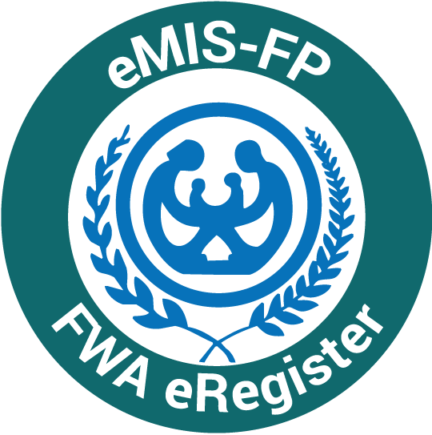

Release notes

Module: Family Welfare Assistant (FWA) eRegister
Version: 2.7
Date: May 15, 2019
About the release:
eMIS-FWA 2.7 is a new release (based on the version of 2.4) that contains list of issue fixes,
enhancements and some new features.
Issues fixed:
- PRS: Multiple units are displayed during Khana creation were shown earlier which has been resolved in
instead of existing PRS
- PRS and ELCO: FWAs who have been assigned multiple wards/units could now see all wards/units at every level
- ELCO: age mismatch between member and ELCO list resolved (resolved in search results also).
- ELCO: husband name made editable in the ELCO registration page.
- Death module: ELCO number is not shown in death view list for male death.
- Death module: Name of the husband is displayed for married women
- 0-15 month module: View-only page for EPI has been modified to entered EPI data
- WorkPlan: added fields for: (i) participation in satellite clinic, (ii) EPI activities, (iii) Court-yard
meeting (Uthan Boithak), (iv) school meeting and (v) mobile movie display.
- New Tab [Model: Lenovo TB-8504X] related issues (crash & UI) resolved.
Enhancements:
Lists of changes made on FWA 9th edition; compared to 8th edition
-
Modification:
- Texts modified to bring conformity with the new and 9th edition of FWA paper register
- Logo
-
Addition:
The following additions are incorporated in to the 9th edition such as,
- Last child’s age in ELCO module;
- Vaccines provided through EPI; prevention of violence,
- Psychological problems, drug addiction prevention and healing in adolescent module;
- Yes/no options for Counseling on the postnatal family planning process, 7.1% Cholrohexedine
and Loading dose of MgSO4, IFA doses in ANC service
- Yes/no options for the delivery conducted following AMTSL in delivery;
- Yes/no options for skin-to-skin care for newborn; resuscitation using bag and mask newborn baby;
- Counseling on the post-delivery family planning process in PNC services;
- Migration-out within and outside the catchment area is available
-
Deletion:
- Khana no. and delayed bathing
New features (added into the 9th version of the FWA eRegister)
-
Autism module
- Registration: Select household > go to member > and then select Autism list
- List View: touch Autism list in logged in page
-
Stock and distribution module
- To view current stock: touch current stock button in logged in page
- To view stock distribution status: touch stock distribution button in logged page
-
Ashrayan areas
- Special area i.e Ashroyon project can be selected during household registration
- Monthly report on Ashroyon area can be generated in report section